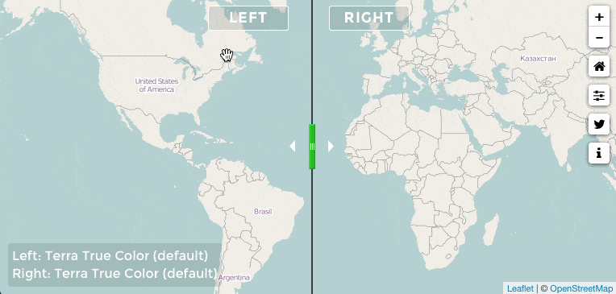

Update on MODIS Before / After project
Access, Compare, Share VIIRS imagery
Since December 11, VIIRS (the Visible Infrared Imaging Radiometer Suite) daily/global imagery from the Suomi NPP satellite is available through NASA GIBS.
Here is the description of SUOMI NPP VIIRS imagery from NASA GIBS blog post:
One of the most visually striking differences between VIIRS and MODIS is that VIIRS has a wider swath which provides full coverage of the globe on a daily basis. That wider swath does have a tradeoff, though - the maximum spatial resolution of VIIRS is 375 meters per pixel while MODIS is 250 meters per pixel.
I have integrated the three VIIRS imagery basemap to the MODIS-VIIRS Before/After project, so now you can compare 12 different basemaps
Original Announcement (August 31st, 2015):
A new project with a new type of data! Following a collaboration with Joaquín Lascombes (@joacolascombes) on Modis data, I had the thought that it will be nice to have a tool to visualize MODIS (daily and worldwide multispectral) data.
So here it is: MODIS Before/After.
This new tool can be use to compare two dates (see gif above) or just to visualise different Modis dataset for a unique date.
- Date: December 2015
- Category: MODIS / VIIRS / OpenData